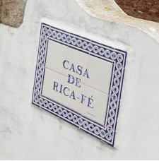

About
Historic information about the property.
-

XIII century
The origin of the property's name
The property name was already mentioned in 1258 in the Ordinances Afonsinas. It's a combination of Rica with Fé (Faith). Rica - Poland duke's daughter - was queen of Castile (1152-1157). Saint Fé of Agen is venerated in Conques Abbey, in the French Pyrenees
-

XIII century - XV century
Tradition of Agriculture and Livestock
Around 1225 the Cistercian monks of Moreiruela Granja in Zamora, acquired this property for their own food production, raising sheep. They also introduced the improvement of water use and sustainable agroforestry use. They managed this property and many others for 200 years.
-

XVI century - XVIII century
Jesuits
In 1571 the Jesuits obtained royal authorization to buy this property to private individuals for their own production of food products, raising sheep. It was also used as weekend residence for teachers of the University College of Jesus, from the city of Bragança. They build a granite fountain dating back to 1742. They administered this property for 200 years, until 1759, when they abandoned Portugal after persecution by the Marques of Pombal.
-

XVIII century - XXI century
Current owners
The King divided its properties in several farms. This property was acquired by the sixth grandfather of the current owners in 1780 at auction. Since then it has been in the possession of the family.
-

XX century - XXI century
O lúpulo
In 1960 the hop culture for the manufacture of beer was initiated and 6ha were progressively installed. Market conditions have determined the cultivation abandonment in 2001.
-
Come
see us